import matplotlib.pyplot as plt 1. The Perceptron: A Single Linear Neuron
The Perceptron is the simplest form of a neural network. It’s a single neuron that takes binary inputs, applies weights and a bias, and uses a step function to produce a binary output. It can only solve linearly separable problems.
The formula is: \(y = f(\sum_{i} w_i x_i + b)\), where \(f\) is a step function.
\(f(x) = \begin{cases} 1 & \text{if } x \geq 0 \\ 0 & \text{if } x < 0 \end{cases}\)
import numpy as np
class Perceptron:
"""A simple Perceptron classifier."""
def __init__(self, learning_rate=0.1, n_iters=100):
self.lr = learning_rate
self.n_iters = n_iters
self.activation_func = self._step_function
self.weights = None
self.bias = None
def _step_function(self, x):
return np.where(x >= 0, 1, 0)
def fit(self, X, y):
print('Beginning to fit')
n_samples, n_features = X.shape
# Initialize weights and bias
self.weights = np.zeros(n_features)
self.bias = 0
for i in range(self.n_iters):
for idx, x_i in enumerate(X):
linear_output = np.dot(x_i, self.weights) + self.bias
y_predicted = self.activation_func(linear_output)
# Perceptron update rule
update = self.lr * (y[idx] - y_predicted)
self.weights += update * x_i
self.bias += update
if i%10==0:
print(i)
def predict(self, X):
linear_output = np.dot(X, self.weights) + self.bias
return self.activation_func(linear_output)
def show(self):
fig, ax = plt.subplots(figsize=(4, 2))
ax.axis('off')
# Input layer (2 inputs)
ax.add_patch(plt.Circle((0.5, 1), 0.1, color='skyblue', ec='black'))
ax.text(0.3, 1, "$x_1$", fontsize=12)
ax.add_patch(plt.Circle((0.5, 0.5), 0.1, color='skyblue', ec='black'))
ax.text(0.3, 0.5, "$x_2$", fontsize=12)
# Output neuron
ax.add_patch(plt.Circle((2, 0.75), 0.12, color='salmon', ec='black'))
ax.text(2.2, 0.75, "$\hat{y}$", fontsize=12)
# Arrows
ax.annotate("", xy=(1.88, 0.75), xytext=(0.6, 1), arrowprops=dict(arrowstyle='->'))
ax.annotate("", xy=(1.88, 0.75), xytext=(0.6, 0.5), arrowprops=dict(arrowstyle='->'))
ax.set_title("Perceptron Architecture", fontsize=14)
plt.xlim(0, 2.5)
plt.ylim(0.2, 1.3)
plt.tight_layout()
plt.show()<>:51: SyntaxWarning: invalid escape sequence '\h'
<>:51: SyntaxWarning: invalid escape sequence '\h'
/tmp/ipykernel_65160/2482501332.py:51: SyntaxWarning: invalid escape sequence '\h'
ax.text(2.2, 0.75, "$\hat{y}$", fontsize=12)model = Perceptron()model.show()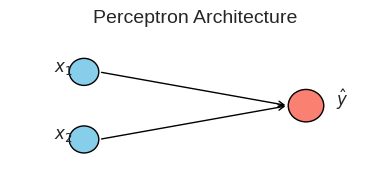
# Generate data
x_vals = np.linspace(-5, 5, 500)
y_step = model._step_function(x_vals)
# Create the plot
plt.figure(figsize=(12, 8))
plt.subplot(2, 2, 1)
plt.plot(x_vals, y_step, label='Step Function')
plt.title('Step Activation Function')
plt.xlabel('Input value (x)')
plt.ylabel('Output value')
plt.ylim(-0.1, 1.1)
plt.legend()
print("Step Function: Outputs 0 for negative input, 1 for positive. Used in the original Perceptron.")Step Function: Outputs 0 for negative input, 1 for positive. Used in the original Perceptron.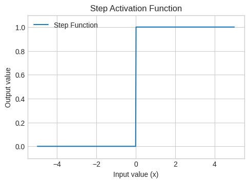
Verification: Perceptron Fails for XOR Gate
The XOR (exclusive OR) gate is a classic example of a non-linearly separable problem. A single straight line cannot separate the (0,1) and (1,0) points from (0,0) and (1,1).
# XOR problem data
X_xor = np.array([[0, 0], [0, 1], [1, 0], [1, 1]])
y_xor = np.array([0, 1, 1, 0])
plt.figure(figsize=(5, 5))
for label in np.unique(y_xor):
plt.scatter(
X_xor[y_xor == label, 0],
X_xor[y_xor == label, 1],
label=f"Class {label}",
edgecolor='k',
s=100
)
plt.title("XOR Dataset")
plt.xlabel("x1")
plt.ylabel("x2")
plt.xticks([0, 1])
plt.yticks([0, 1])
plt.grid(True)
plt.legend()
plt.axis('equal')
plt.show()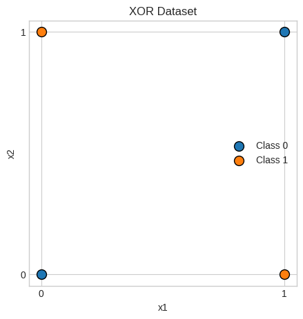
# Train the perceptron
perceptron = Perceptron(learning_rate=0.1, n_iters=100)
perceptron.fit(X_xor, y_xor)Beginning to fit
0
10
20
30
40
50
60
70
80
90print("\n=== Perceptron Model Structure ===")
print(f"Number of layers: 1 (no hidden layer)")
print(f"Weights shape: {perceptron.weights.shape}")
print(f"Bias: {perceptron.bias}")
=== Perceptron Model Structure ===
Number of layers: 1 (no hidden layer)
Weights shape: (2,)
Bias: 0.0# Get predictions
predictions = perceptron.predict(X_xor)
print(f"XOR Input:\n{X_xor}")
print(f"Expected Output: {y_xor}")
print(f"Perceptron Output: {predictions}")
accuracy = np.sum(y_xor == predictions) / len(y_xor)
print(f"Accuracy: {accuracy * 100}%")
print("\nAs you can see, the single-layer Perceptron cannot learn the XOR function.")XOR Input:
[[0 0]
[0 1]
[1 0]
[1 1]]
Expected Output: [0 1 1 0]
Perceptron Output: [1 1 0 0]
Accuracy: 50.0%
As you can see, the single-layer Perceptron cannot learn the XOR function.2. Multilayer Perceptron (MLP) for XOR
To solve non-linear problems like XOR, we need to add a hidden layer. This is a Multilayer Perceptron (MLP). The hidden layer allows the network to learn non-linear combinations of the inputs. We also switch to a smooth activation function like the Sigmoid function to enable gradient-based learning via backpropagation.
Mathematically,
Sigmoid function: \(\sigma(x) = \frac{1}{1 + e^{-x}}\)
# Activation function and its derivative
def sigmoid(x):
return 1 / (1 + np.exp(-x))
def sigmoid_derivative(x):
return x * (1 - x)
y_sigmoid = sigmoid(x_vals)
y_sigmoid_deriv = sigmoid_derivative(y_sigmoid)
plt.figure(figsize=(6, 6))
plt.plot(x_vals, y_sigmoid, label='Sigmoid')
plt.plot(x_vals, y_sigmoid_deriv, label='Sigmoid Derivative', linestyle='--')
plt.title('Sigmoid Function and its Derivative')
plt.xlabel('Input value (x)')
plt.ylabel('Output value')
plt.legend()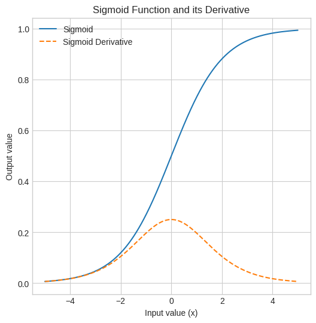
def draw_mlp_architecture(input_size, hidden_size, output_size):
fig, ax = plt.subplots(figsize=(6, 4))
ax.axis('off')
# Circle radius
r = 0.1
# Layer x-positions
x_input = 0.5
x_hidden = 2
x_output = 3.5
# Draw input layer
for i in range(input_size):
y = 1.5 - i * 0.75
ax.add_patch(plt.Circle((x_input, y), r, color='skyblue', ec='black'))
ax.text(x_input - 0.3, y, f"$x_{i+1}$", fontsize=12)
# Draw hidden layer
for j in range(hidden_size):
y = 1.5 - j * 0.75
ax.add_patch(plt.Circle((x_hidden, y), r, color='lightgreen', ec='black'))
ax.text(x_hidden, y, f"$h_{j+1}$", fontsize=12, ha='center', va='center')
# Draw output layer
for k in range(output_size):
y = 0.75 # Always one output neuron here
ax.add_patch(plt.Circle((x_output, y), r, color='salmon', ec='black'))
ax.text(x_output + 0.2, y, "$\\hat{y}$", fontsize=12)
# Arrows from input to hidden
for i in range(input_size):
y1 = 1.5 - i * 0.75
for j in range(hidden_size):
y2 = 1.5 - j * 0.75
ax.annotate("", xy=(x_hidden - r, y2), xytext=(x_input + r, y1),
arrowprops=dict(arrowstyle='->', lw=1))
# Arrows from hidden to output
for j in range(hidden_size):
y2 = 1.5 - j * 0.75
y_out = 0.75
ax.annotate("", xy=(x_output - r, y_out), xytext=(x_hidden + r, y2),
arrowprops=dict(arrowstyle='->', lw=1))
ax.set_title("MLP Architecture for XOR", fontsize=14)
plt.xlim(0, 4)
plt.ylim(-0.5, 2.0)
plt.tight_layout()
plt.show()import numpy as np
class MLP_XOR:
def __init__(self, input_size=2, hidden_size=2, output_size=1):
# Initialize weights randomly to break symmetry
self.weights_hidden = np.random.uniform(size=(input_size, hidden_size))
self.weights_output = np.random.uniform(size=(hidden_size, output_size))
# Biases can be initialized to zero or randomly
self.bias_hidden = np.random.uniform(size=(1, hidden_size))
self.bias_output = np.random.uniform(size=(1, output_size))
def forward(self, X):
# Forward propagation
self.hidden_activation = sigmoid(np.dot(X, self.weights_hidden) + self.bias_hidden)
self.output = sigmoid(np.dot(self.hidden_activation, self.weights_output) + self.bias_output)
return self.output
def backward(self, X, y, output, lr):
# error
output_error = y - output
output_delta = output_error * sigmoid_derivative(output)
hidden_error = output_delta.dot(self.weights_output.T)
hidden_delta = hidden_error * sigmoid_derivative(self.hidden_activation)
# Update weights and biases
self.weights_output += self.hidden_activation.T.dot(output_delta) * lr
self.weights_hidden += X.T.dot(hidden_delta) * lr
self.bias_output += np.sum(output_delta, axis=0, keepdims=True) * lr
self.bias_hidden += np.sum(hidden_delta, axis=0, keepdims=True) * lr
def train(self, X, y, epochs=10000, lr=0.1):
y = y.reshape(-1, 1) # Ensure y is a column vector
for i in range(epochs):
output = self.forward(X)
self.backward(X, y, output, lr)
if (i % 1000) == 0:
loss = np.mean(np.square(y - output))
print(f"Epoch {i} Loss: {loss:.4f}")
def predict(self, X):
return (self.forward(X) > 0.5).astype(int)
def show(self):
draw_mlp_architecture(
input_size=self.weights_hidden.shape[0],
hidden_size=self.weights_hidden.shape[1],
output_size=self.weights_output.shape[1]
)mlp = MLP_XOR()
mlp.show()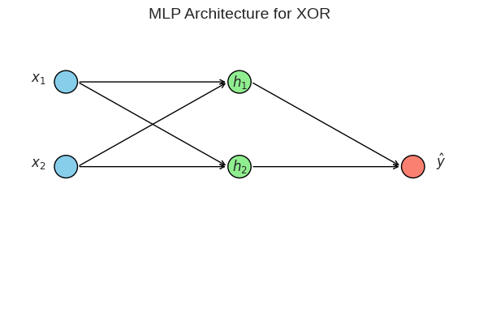
X_xor = np.array([[0, 0], [0, 1], [1, 0], [1, 1]])
y_xor = np.array([0, 1, 1, 0])
mlp_xor = MLP_XOR()
mlp_xor.train(X_xor, y_xor)Epoch 0 Loss: 0.3274
Epoch 1000 Loss: 0.2498
Epoch 2000 Loss: 0.2479
Epoch 3000 Loss: 0.2306
Epoch 4000 Loss: 0.1784
Epoch 5000 Loss: 0.0817
Epoch 6000 Loss: 0.0219
Epoch 7000 Loss: 0.0104
Epoch 8000 Loss: 0.0065
Epoch 9000 Loss: 0.0046predictions = mlp_xor.predict(X_xor)
print("\n--- MLP for XOR Results ---")
print(f"Expected Output: {y_xor}")
print(f"MLP Final Output: {predictions.flatten()}")
accuracy = np.sum(y_xor == predictions.flatten()) / len(y_xor)
print(f"Accuracy: {accuracy * 100}%")
print("\nSuccess! The MLP with a hidden layer correctly learns the XOR function.")
--- MLP for XOR Results ---
Expected Output: [0 1 1 0]
MLP Final Output: [0 1 1 0]
Accuracy: 100.0%
Success! The MLP with a hidden layer correctly learns the XOR function.3. Simple Neural Network for MNIST from Scratch
Now, we’ll scale up to a more complex problem: classifying handwritten digits from the MNIST dataset. We will build everything from scratch.
- Architecture: Input Layer (784 neurons) -> Hidden Layer (128 neurons, ReLU activation) -> Output Layer (10 neurons, Softmax activation)
- Loss Function: Categorical Cross-Entropy
- Optimizer: Stochastic Gradient Descent (SGD)
Note: We use torchvision for convenience to download and load the dataset, but all network logic is pure NumPy.
import numpy as np
import matplotlib.pyplot as plt
from torchvision import datasets
import torchvision.transforms as transforms
from tqdm import tqdmtransform = transforms.ToTensor()
train_data = datasets.MNIST(root='data', train=True, download=True, transform=transform)
test_data = datasets.MNIST(root='data', train=False, download=True, transform=transform)
len(train_data), len(test_data)(60000, 10000)# convert to numpy
# flatten the images
# normalize the data
print(train_data.data.numpy().shape)
X_train = train_data.data.numpy().reshape(len(train_data), -1) / 255.0
y_train_raw = train_data.targets.numpy()
X_test = test_data.data.numpy().reshape(len(test_data), -1) / 255.0
y_test_raw = test_data.targets.numpy()
X_train.shape(60000, 28, 28)(60000, 784)# One-hot encode labels
def one_hot(y, num_classes):
return np.eye(num_classes)[y]# demonstrating one-hot
label = 7
batch_of_labels = np.array([3, 0, 9, 1])
num_classes = 10
one_hot_label = one_hot(label, num_classes)
one_hot_batch = one_hot(batch_of_labels, num_classes)
print(f"Original label: {label}")
print(f"One-hot vector: {one_hot_label}\n")
print(f"Original batch: {batch_of_labels}")
print(f"One-hot batch:\n{one_hot_batch}")Original label: 7
One-hot vector: [0. 0. 0. 0. 0. 0. 0. 1. 0. 0.]
Original batch: [3 0 9 1]
One-hot batch:
[[0. 0. 0. 1. 0. 0. 0. 0. 0. 0.]
[1. 0. 0. 0. 0. 0. 0. 0. 0. 0.]
[0. 0. 0. 0. 0. 0. 0. 0. 0. 1.]
[0. 1. 0. 0. 0. 0. 0. 0. 0. 0.]]y_train = one_hot(y_train_raw, 10)
y_test = one_hot(y_test_raw, 10)
y_train[:2, :], y_test[:2, :](array([[0., 0., 0., 0., 0., 1., 0., 0., 0., 0.],
[1., 0., 0., 0., 0., 0., 0., 0., 0., 0.]]),
array([[0., 0., 0., 0., 0., 0., 0., 1., 0., 0.],
[0., 0., 1., 0., 0., 0., 0., 0., 0., 0.]]))
print(f"Training data shape: {X_train.shape}")
print(f"Training labels shape: {y_train.shape}")Training data shape: (60000, 784)
Training labels shape: (60000, 10)def relu(x):
return np.maximum(0, x)
def relu_derivative(x):
return np.where(x > 0, 1, 0)
y_relu = relu(x_vals)
y_relu_deriv = relu_derivative(x_vals)
plt.plot(x_vals, y_relu, label='ReLU')
plt.plot(x_vals, y_relu_deriv, label='ReLU Derivative', linestyle='--')
plt.title('ReLU Function and its Derivative')
plt.xlabel('Input value (x)')
plt.ylabel('Output value')
plt.legend()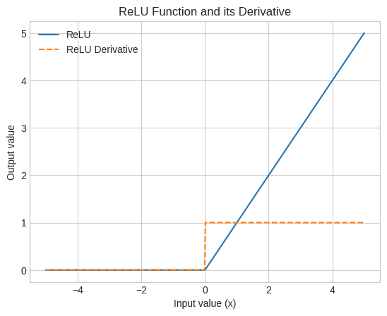
def softmax(x):
exps = np.exp(x - np.max(x, axis=1, keepdims=True)) # difference for stability
return exps / np.sum(exps, axis=1, keepdims=True)
# extra bracket for batch dimension
logits = np.array([[2.0, 1.0, 0.1, 3.0, -1.0]])
probabilities = softmax(logits)
# flatten to plot
probabilities_flatten = probabilities.flatten()
print(f"Original Logits: {logits.flatten()}")
print(f"Probabilities after Softmax: {np.round(probabilities, 3)}")
print(f"Sum of probabilities: {np.sum(probabilities):.2f}")
class_indices = [f'Class {i}' for i in range(len(probabilities_flatten))]
plt.bar(class_indices, probabilities_flatten)
plt.title('Softmax Function Output')
plt.xlabel('Class')
plt.ylabel('Probability')
plt.ylim(0, 1)
print("Softmax Function: Converts raw scores (logits) into a probability distribution. The class with the highest logit gets the highest probability.")Original Logits: [ 2. 1. 0.1 3. -1. ]
Probabilities after Softmax: [[0.233 0.086 0.035 0.634 0.012]]
Sum of probabilities: 1.00
Softmax Function: Converts raw scores (logits) into a probability distribution. The class with the highest logit gets the highest probability.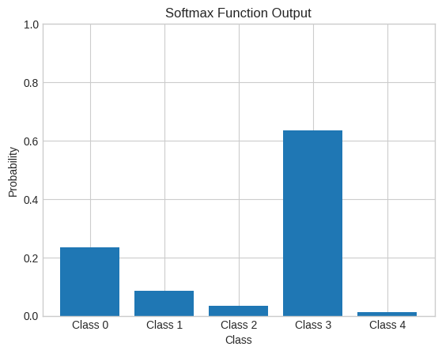
# penalty should grow exponentially as the model gets more confident and wrong
def cross_entropy_loss(y_pred, y_true):
# y_true contains labels for entire batch
# Clip to avoid log(0)
y_pred_clipped = np.clip(y_pred, 1e-12, 1. - 1e-12)
# so divided by batch size for averaging loss per sample
# y_true is either 0 or 1, one_hot
return -np.sum(y_true * np.log(y_pred_clipped)) / y_true.shape[0]
y_true = np.array([[0, 0, 1, 0]])
predicted_probs_for_correct_class = np.linspace(0.01, 0.99, 200)
# basic curve
losses_curve = [-np.log(p) for p in predicted_probs_for_correct_class]
plt.style.use('seaborn-v0_8-whitegrid')
plt.figure(figsize=(10, 6))
plt.plot(predicted_probs_for_correct_class, losses_curve, color='royalblue', label='Loss Curve')
# 3 Key Cases
cases = {
'A': 0.95, # High Confidence, Correct
'B': 0.50, # Medium Confidence
'C': 0.05 # Low Confidence, Wrong
}
colors = {'A': 'green', 'B': 'orange', 'C': 'red'}
print("--- Predictions and Losses for 3 Cases ---\n")
for case, prob in cases.items():
remaining_prob = (1 - prob) / 3
# sharing same for the rest of the 3 classes
y_pred = np.array([remaining_prob, remaining_prob, prob, remaining_prob])
loss = cross_entropy_loss(y_pred.reshape(1, -1), y_true)
print(f"--- Case {case} ---")
print(f"Prediction Vector (y_pred): {np.round(y_pred, 4)}")
print(f"Corresponding Loss: {loss:.4f}\n")
# Marking the points
plt.plot(prob, loss, 'o', color=colors[case], markersize=10, label=f'Case {case}')
plt.title('Cross-Entropy Loss Curve', fontsize=16)
plt.xlabel('Predicted Probability for the Correct Class', fontsize=12)
plt.ylabel('Calculated Loss', fontsize=12)
plt.legend()
plt.grid(True)
plt.ylim(0, 5)
plt.show()--- Predictions and Losses for 3 Cases ---
--- Case A ---
Prediction Vector (y_pred): [0.0167 0.0167 0.95 0.0167]
Corresponding Loss: 0.0513
--- Case B ---
Prediction Vector (y_pred): [0.1667 0.1667 0.5 0.1667]
Corresponding Loss: 0.6931
--- Case C ---
Prediction Vector (y_pred): [0.3167 0.3167 0.05 0.3167]
Corresponding Loss: 2.9957
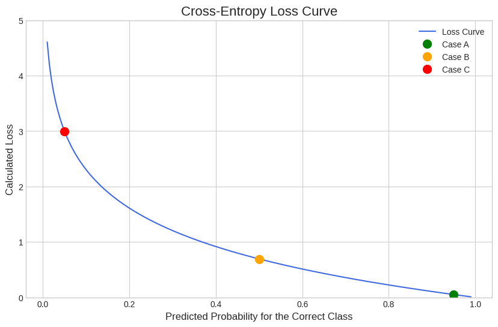
Simple computation graph to understand gradients formula computation
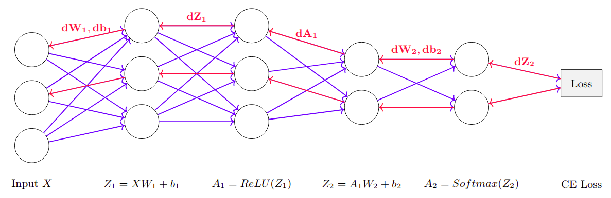
Cross entropy backpropagation: https://medium.com/data-science/deriving-backpropagation-with-cross-entropy-loss-d24811edeaf9
class SimpleNN_MNIST:
def __init__(self, input_size, hidden_size, output_size):
# He initialization for weights
self.W1 = np.random.randn(input_size, hidden_size) * np.sqrt(2. / input_size)
self.b1 = np.zeros((1, hidden_size))
self.W2 = np.random.randn(hidden_size, output_size) * np.sqrt(2. / hidden_size)
self.b2 = np.zeros((1, output_size))
def forward(self, X):
# Store intermediate values for backpropagation
self.Z1 = X @ self.W1 + self.b1
self.A1 = relu(self.Z1)
self.Z2 = self.A1 @ self.W2 + self.b2
self.A2 = softmax(self.Z2)
return self.A2
def backward(self, X, y_true):
# Number of samples in the batch
m = y_true.shape[0]
# -----------------------------------
# Output Layer Gradients
# -----------------------------------
# Gradient of the loss with respect to Z2 (pre-activation of the output layer)
# Since we're using Softmax + Cross-Entropy Loss, the gradient simplifies to:
# dZ2 = A2 - y_true
# A2 is the output from softmax, y_true is one-hot encoded ground truth
dZ2 = self.A2 - y_true
# Gradient of the loss with respect to W2 (weights between hidden and output layers)
# Using the chain rule: dW2 = (A1^T @ dZ2) / m
# A1: activations from hidden layer, shape (m, hidden_dim)
# dZ2: error term for output layer, shape (m, output_dim)
# A1.T @ dZ2 results in shape (hidden_dim, output_dim)
self.dW2 = (self.A1.T @ dZ2) / m
# Gradient of the loss with respect to b2 (bias of the output layer)
# Sum over the batch dimension to get bias gradient: shape (1, output_dim)
self.db2 = np.sum(dZ2, axis=0, keepdims=True) / m
# Backpropagating the error to the hidden layer
# dA1 = dZ2 @ W2^T
# W2.T: shape (output_dim, hidden_dim)
# dZ2: shape (m, output_dim)
# dA1: shape (m, hidden_dim), error signal for hidden layer outputs (A1)
dA1 = dZ2 @ self.W2.T
# Applying the derivative of the ReLU activation function
# ReLU'(Z1) is 1 where Z1 > 0, else 0
# Element-wise multiply with dA1 to get dZ1 (gradient wrt pre-activation of hidden layer)
dZ1 = dA1 * relu_derivative(self.Z1)
self.dW1 = (X.T @ dZ1) / m
self.db1 = np.sum(dZ1, axis=0, keepdims=True) / m
def update_params(self, lr):
# Basic SGD optimizer
self.W1 -= lr * self.dW1
self.b1 -= lr * self.db1
self.W2 -= lr * self.dW2
self.b2 -= lr * self.db2
def train(self, X_train, y_train, X_test, y_test_raw, epochs, lr, batch_size):
history = {'loss': [], 'accuracy': []}
num_batches = len(X_train) // batch_size
for epoch in range(epochs):
# Shuffle
permutation = np.random.permutation(len(X_train))
X_train_shuffled = X_train[permutation]
y_train_shuffled = y_train[permutation]
epoch_loss = 0
for i in tqdm(range(num_batches), desc=f"Epoch {epoch+1}/{epochs}"):
# Create mini-batch
start = i * batch_size
end = start + batch_size
X_batch = X_train_shuffled[start:end]
y_batch = y_train_shuffled[start:end]
y_pred = self.forward(X_batch)
epoch_loss += cross_entropy_loss(y_pred, y_batch)
self.backward(X_batch, y_batch)
self.update_params(lr)
# Calculate loss and accuracy at the end of epoch
avg_loss = epoch_loss / num_batches
# Evaluate on test set
y_pred_test = self.predict(X_test)
accuracy = np.sum(y_pred_test == y_test_raw) / len(y_test_raw)
history['loss'].append(avg_loss)
history['accuracy'].append(accuracy)
print(f'Epoch {epoch+1} - Loss: {avg_loss:.4f}, Test Accuracy: {accuracy:.4f}')
return history
def predict(self, X):
y_pred_probs = self.forward(X)
return np.argmax(y_pred_probs, axis=1)# --- 3. Train the Network and Plot Results ---
# Hyperparameters
INPUT_SIZE = 784
HIDDEN_SIZE = 128
OUTPUT_SIZE = 10
EPOCHS = 10
LEARNING_RATE = 0.1
BATCH_SIZE = 64
scratch_nn = SimpleNN_MNIST(INPUT_SIZE, HIDDEN_SIZE, OUTPUT_SIZE)
history = scratch_nn.train(X_train, y_train, X_test, y_test_raw, EPOCHS, LEARNING_RATE, BATCH_SIZE)
fig, (ax1, ax2) = plt.subplots(1, 2, figsize=(12, 5))
fig.suptitle('From-Scratch Model Training', fontsize=16)
ax1.plot(history['loss'])
ax1.set_title('Training Loss')
ax1.set_xlabel('Epoch')
ax1.set_ylabel('Cross-Entropy Loss')
ax2.plot(history['accuracy'])
ax2.set_title('Test Accuracy')
ax2.set_xlabel('Epoch')
ax2.set_ylabel('Accuracy')
plt.show()Epoch 1/10: 100%|██████████████████████| 937/937 [00:02<00:00, 315.13it/s]Epoch 1 - Loss: 0.3735, Test Accuracy: 0.9359Epoch 2/10: 100%|██████████████████████| 937/937 [00:01<00:00, 536.68it/s]Epoch 2 - Loss: 0.2000, Test Accuracy: 0.9515Epoch 3/10: 100%|██████████████████████| 937/937 [00:02<00:00, 428.29it/s]Epoch 3 - Loss: 0.1509, Test Accuracy: 0.9600Epoch 4/10: 100%|██████████████████████| 937/937 [00:01<00:00, 569.65it/s]Epoch 4 - Loss: 0.1223, Test Accuracy: 0.9645Epoch 5/10: 100%|██████████████████████| 937/937 [00:01<00:00, 546.63it/s]Epoch 5 - Loss: 0.1034, Test Accuracy: 0.9675Epoch 6/10: 100%|██████████████████████| 937/937 [00:03<00:00, 308.86it/s]Epoch 6 - Loss: 0.0895, Test Accuracy: 0.9693Epoch 7/10: 100%|██████████████████████| 937/937 [00:01<00:00, 546.72it/s]Epoch 7 - Loss: 0.0784, Test Accuracy: 0.9728Epoch 8/10: 100%|██████████████████████| 937/937 [00:01<00:00, 528.95it/s]Epoch 8 - Loss: 0.0700, Test Accuracy: 0.9745Epoch 9/10: 100%|██████████████████████| 937/937 [00:02<00:00, 467.59it/s]Epoch 9 - Loss: 0.0624, Test Accuracy: 0.9752Epoch 10/10: 100%|█████████████████████| 937/937 [00:01<00:00, 492.77it/s]Epoch 10 - Loss: 0.0565, Test Accuracy: 0.9761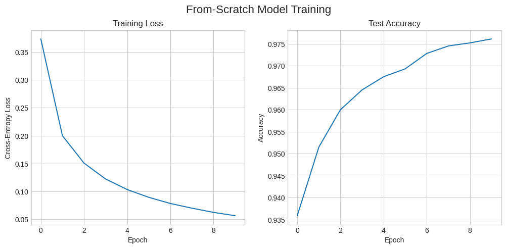
4. Weight Initialization Techniques
Proper weight initialization is crucial for preventing gradients from vanishing (becoming too small) or exploding (becoming too large) during training. Here are a few common techniques implemented from scratch.
- Zeros Initialization: A bad practice that causes all neurons in a layer to learn the same thing.
- Random Normal: Breaks symmetry, but can lead to vanishing/exploding gradients if not scaled correctly.
- Xavier/Glorot Initialization: Scales weights based on the number of input neurons (
n_in). Good for Tanh/Sigmoid activations. Formula: \(W \sim N(0, \sqrt{1/n_{in}})\). - He Initialization: Scales weights based on
n_in. Designed for ReLU-based activations. Formula: \(W \sim N(0, \sqrt{2/n_{in}})\).
import numpy as np
import matplotlib.pyplot as plt
from scipy.stats import gaussian_kde
# Initialization
def zeros_init(n_in, n_out):
return np.zeros((n_out, n_in))
def random_normal_init(n_in, n_out):
return np.random.randn(n_out, n_in) * 0.01
def xavier_init(n_in, n_out):
return np.random.randn(n_out, n_in) * np.sqrt(1.0 / n_in)
def he_init(n_in, n_out):
return np.random.randn(n_out, n_in) * np.sqrt(2.0 / n_in)
# plot density curves
def plot_density(weights, label, color):
flat_weights = weights.flatten()
density = gaussian_kde(flat_weights)
x_vals = np.linspace(flat_weights.min(), flat_weights.max(), 200)
plt.plot(x_vals, density(x_vals), label=label, color=color)
# Layer dimensions
n_in, n_out = 784, 128
initializations = {
"Random Normal": (random_normal_init(n_in, n_out), 'blue'),
"Xavier": (xavier_init(n_in, n_out), 'red'),
"He": (he_init(n_in, n_out), 'green'),
"Zeros": (zeros_init(n_in, n_out), 'black')
}
# Print stats and plot densities (excluding Zeros)
plt.figure(figsize=(10, 5))
for name, (weights, color) in initializations.items():
mean, std = weights.mean(), weights.std()
print(f"{name:<15} | Mean: {mean:>7.4f}, Std: {std:>7.4f}")
if name != "Zeros":
plot_density(weights, name, color)
plt.title("Weight Initialization Density (Excl. Zeros)")
plt.xlabel("Weight Value")
plt.ylabel("Density")
plt.grid(True)
plt.legend()
plt.tight_layout()
plt.show()
# Plot Zeros separately
plt.figure(figsize=(5, 4))
plt.hist(initializations["Zeros"][0].flatten(), bins=10, color='gray')
plt.title("Zeros Initialization (Separate View)")
plt.xlabel("Weight Value")
plt.ylabel("Frequency")
plt.grid(True)
plt.tight_layout()
plt.show()Random Normal | Mean: 0.0000, Std: 0.0100
Xavier | Mean: 0.0000, Std: 0.0358
He | Mean: 0.0000, Std: 0.0505
Zeros | Mean: 0.0000, Std: 0.0000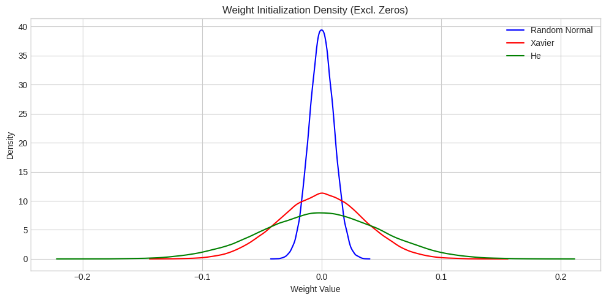
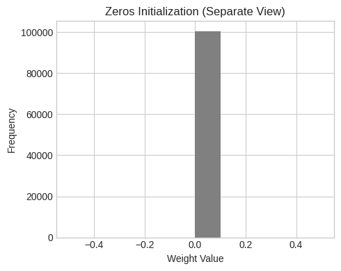
5. PyTorch Verification
Let’s build the exact same network in PyTorch. This helps verify that our from-scratch implementation is correct. We will use the same architecture, hyperparameters, and optimizer.
The final accuracy should be very close to our NumPy model.
import torch
import torch.nn as nn
import torch.optim as optim
from torch.utils.data import TensorDataset, DataLoader
X_train_t = torch.tensor(X_train, dtype=torch.float32)
y_train_t = torch.tensor(y_train_raw, dtype=torch.long)
X_test_t = torch.tensor(X_test, dtype=torch.float32)
y_test_t = torch.tensor(y_test_raw, dtype=torch.long)
train_dataset = TensorDataset(X_train_t, y_train_t)
test_dataset = TensorDataset(X_test_t, y_test_t)
train_loader = DataLoader(train_dataset, batch_size=BATCH_SIZE, shuffle=True)
test_loader = DataLoader(test_dataset, batch_size=BATCH_SIZE, shuffle=False)
class PyTorchNN(nn.Module):
def __init__(self, input_size, hidden_size, output_size):
super(PyTorchNN, self).__init__()
self.fc1 = nn.Linear(input_size, hidden_size)
self.relu = nn.ReLU()
self.fc2 = nn.Linear(hidden_size, output_size)
# Apply He initialization
nn.init.kaiming_normal_(self.fc1.weight, nonlinearity='relu')
nn.init.kaiming_normal_(self.fc2.weight, nonlinearity='relu')
def forward(self, x):
out = self.fc1(x)
out = self.relu(out)
out = self.fc2(out)
return out
pytorch_nn = PyTorchNN(INPUT_SIZE, HIDDEN_SIZE, OUTPUT_SIZE)
criterion = nn.CrossEntropyLoss()
optimizer = optim.SGD(pytorch_nn.parameters(), lr=LEARNING_RATE)
pytorch_history = {'loss': [], 'accuracy': []}
for epoch in range(EPOCHS):
epoch_loss = 0
for i, (inputs, labels) in enumerate(tqdm(train_loader, desc=f"Epoch {epoch+1}/{EPOCHS}")):
outputs = pytorch_nn(inputs)
loss = criterion(outputs, labels)
optimizer.zero_grad()
loss.backward()
optimizer.step()
epoch_loss += loss.item()
correct = 0
total = 0
with torch.no_grad():
for inputs, labels in test_loader:
outputs = pytorch_nn(inputs)
_, predicted = torch.max(outputs.data, 1)
total += labels.size(0)
correct += (predicted == labels).sum().item()
avg_loss = epoch_loss / len(train_loader)
accuracy = correct / total
pytorch_history['loss'].append(avg_loss)
pytorch_history['accuracy'].append(accuracy)
print(f'Epoch {epoch+1} - Loss: {avg_loss:.4f}, Accuracy: {accuracy:.4f}')Epoch 1/10: 100%|█████████████████████| 938/938 [00:00<00:00, 1080.91it/s]Epoch 1 - Loss: 0.3656, Accuracy: 0.9382Epoch 2/10: 100%|█████████████████████| 938/938 [00:00<00:00, 1130.23it/s]Epoch 2 - Loss: 0.1950, Accuracy: 0.9547Epoch 3/10: 100%|█████████████████████| 938/938 [00:00<00:00, 1095.94it/s]Epoch 3 - Loss: 0.1472, Accuracy: 0.9615Epoch 4/10: 100%|██████████████████████| 938/938 [00:00<00:00, 996.78it/s]Epoch 4 - Loss: 0.1205, Accuracy: 0.9628Epoch 5/10: 100%|██████████████████████| 938/938 [00:01<00:00, 853.66it/s]Epoch 5 - Loss: 0.1021, Accuracy: 0.9704Epoch 6/10: 100%|██████████████████████| 938/938 [00:01<00:00, 857.51it/s]Epoch 6 - Loss: 0.0882, Accuracy: 0.9725Epoch 7/10: 100%|██████████████████████| 938/938 [00:00<00:00, 979.19it/s]Epoch 7 - Loss: 0.0776, Accuracy: 0.9717Epoch 8/10: 100%|██████████████████████| 938/938 [00:01<00:00, 842.42it/s]Epoch 8 - Loss: 0.0690, Accuracy: 0.9751Epoch 9/10: 100%|█████████████████████| 938/938 [00:00<00:00, 1029.96it/s]Epoch 9 - Loss: 0.0624, Accuracy: 0.9755Epoch 10/10: 100%|█████████████████████| 938/938 [00:00<00:00, 951.11it/s]Epoch 10 - Loss: 0.0562, Accuracy: 0.9775fig, (ax1, ax2) = plt.subplots(1, 2, figsize=(15, 6))
fig.suptitle('From-Scratch vs PyTorch Model Comparison', fontsize=16)
ax1.plot(history['loss'], label='From Scratch')
ax1.plot(pytorch_history['loss'], label='PyTorch', linestyle='--')
ax1.set_title('Training Loss Comparison')
ax1.set_xlabel('Epoch')
ax1.set_ylabel('Cross-Entropy Loss')
ax1.legend()
ax2.plot(history['accuracy'], label='From Scratch')
ax2.plot(pytorch_history['accuracy'], label='PyTorch', linestyle='--')
ax2.set_title('Test Accuracy Comparison')
ax2.set_xlabel('Epoch')
ax2.set_ylabel('Accuracy')
ax2.legend()
plt.show()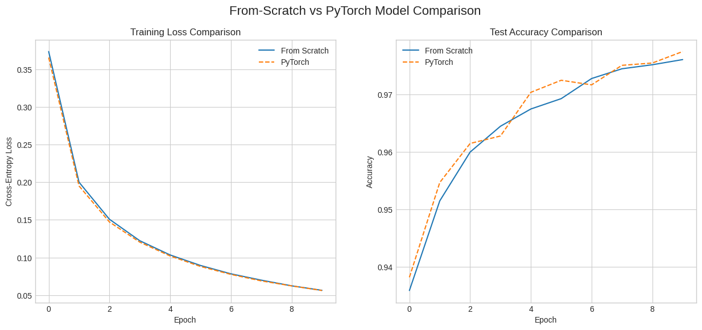